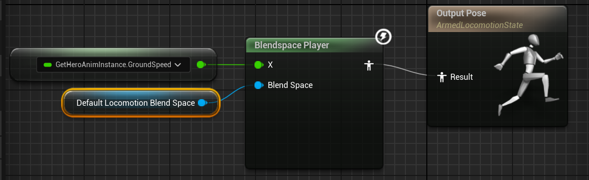

Jan 1, 0001
17 mins read
武器装备与连击系统
角色扩展组件
PawnExtensionComponentBase
|__PawnCombatComponent
|__HeroCombatComponent
|__EnemyCombatComponent
static_assert 是 编译期断言，会在编译时检查条件是否成立，不成立就报编译错误。
创建一个PawnExtensionComponentBase，用于角色组件，统一访问Pawn、Controller等。
protected:
template<class T>
T* GetOwningPawn() const
{
// TPointerIsConvertibleFromTo 测试 T 是否可转换为 APawn
static_assert(TPointerIsConvertibleFromTo<T,APawn>::Value, "'T' Template Parameter to GetPawn must be derived from APawn");
return CastChecked<T>(GetOwner());
}
APawn* GetOwningPawn() const
{
return GetOwningPawn<APawn>();
}
template<class T>
T* GetOwningController() const
{
static_assert(TPointerIsConvertibleFromTo<T,AController>::Value, "'T' Template Parameter to GetController must be derived from AController");
return GetOwningPawn<APawn>()->GetController<T>();
}
之后在WarriorHeroCharacter中定义一个能够获取HeroCombatComponent组件的函数。
FORCEINLINE UHeroCombatComponent* GetHeroCombatComponent() const { return HeroCombatComponent; }
注册生成的武器
PawnCombatComponent中定义一个map存储tag-weapon。
三个函数分别是注册生成的weapon到map中；通过tag获取角色携带的武器；获取角色当前装配的武器。
将会在蓝图中调用这些函数。当GA_Shared_SpawnWeapon中生成武器后调用RegisterSpawnedWeapon
public:
UFUNCTION(BlueprintCallable, Category = "Warrior|Combat")
void RegisterSpawnedWeapon(FGameplayTag InWeaponTagToRegister, AWarriorWeaponBase* InWeaponToRegister, bool bRegisterAsEquippedWeapon = false);
UFUNCTION(BlueprintCallable, Category = "Warrior|Combat")
AWarriorWeaponBase* GetCharacterCarriedWeaponByTag(FGameplayTag InWeaponTagToGet) const;
UPROPERTY(BlueprintReadWrite, Category = "Warrior|Combat")
FGameplayTag CurrentEquippedWeaponTag;
UFUNCTION(BlueprintCallable, Category = "Warrior|Combat")
AWarriorWeaponBase* GetCharacterCurrentEquippedWeapon() const;
private:
TMap<FGameplayTag, AWarriorWeaponBase*> CharacterCarriedWeaponMap;
// 把生成好的武器注册到角色的已持有武器表中，并可选地设为当前装备武器。
void UPawnCombatComponent::RegisterSpawnedWeapon(FGameplayTag InWeaponTagToRegister,
AWarriorWeaponBase* InWeaponToRegister, bool bRegisterAsEquippedWeapon)
{
checkf(!CharacterCarriedWeaponMap.Contains(InWeaponTagToRegister), TEXT("A named %s has already been added as carried weapon"),*InWeaponTagToRegister.ToString());
CharacterCarriedWeaponMap.Emplace(InWeaponTagToRegister, InWeaponToRegister);
if (bRegisterAsEquippedWeapon)
{
CurrentEquippedWeaponTag = InWeaponTagToRegister;
}
}
// 根据武器标签，返回对应的武器对象指针
AWarriorWeaponBase* UPawnCombatComponent::GetCharacterCarriedWeaponByTag(FGameplayTag InWeaponTagToGet) const
{
if (CharacterCarriedWeaponMap.Contains(InWeaponTagToGet))
{
if (AWarriorWeaponBase* const* FoundWeapon = CharacterCarriedWeaponMap.Find(InWeaponTagToGet))
{
return *FoundWeapon;
}
}
return nullptr;
}
// 获取当前装备的武器
AWarriorWeaponBase* UPawnCombatComponent::GetCharacterCurrentEquippedWeapon() const
{
if (!CurrentEquippedWeaponTag.IsValid())
{
return nullptr;
}
return GetCharacterCarriedWeaponByTag(CurrentEquippedWeaponTag);
}
之后就可以在Hero_SpawnAxe中配置注册的tag了。

在WarriorGameAbility中添加两个新函数用于获取CombatComponent和ASC。
UFUNCTION(BlueprintPure, Category = "Warrior|Ability")
UPawnCombatComponent* GetPawnCombatComponentFromActorInfo() const;
UFUNCTION(BlueprintPure, Category = "Warrior|Ability")
UWarriorAbilitySystemComponent* GetWarriorAbilitySystemComponentFromActorInfo() const;
UPawnCombatComponent* UWarriorGameplayAbility::GetPawnCombatComponentFromActorInfo() const
{
return GetAvatarActorFromActorInfo()->FindComponentByClass<UPawnCombatComponent>();
}
UWarriorAbilitySystemComponent* UWarriorGameplayAbility::GetWarriorAbilitySystemComponentFromActorInfo() const
{
return Cast<UWarriorAbilitySystemComponent>(CurrentActorInfo->AbilitySystemComponent);
}
然后创建WarriorHeroGameplayAbility去继承WarriorGameAbility
public:
UFUNCTION(BlueprintPure, Category = "Warrior|Ability")
AWarriorHeroCharacter* GetHeroCharacterFromActorInfo();
UFUNCTION(BlueprintPure, Category = "Warrior|Ability")
AWarriorHeroController* GetHeroControllerFromActorInfo();
UFUNCTION(BlueprintPure, Category = "Warrior|Ability")
UHeroCombatComponent* GetHeroCombatComponentFromActorInfo();
private:
TWeakObjectPtr<AWarriorHeroCharacter> CachedWarriorHeroCharacter;
TWeakObjectPtr<AWarriorHeroController> CachedWarriorHeroController;
AWarriorHeroCharacter* UWarriorHeroGameplayAbility::GetHeroCharacterFromActorInfo()
{
if (!CachedWarriorHeroCharacter.IsValid())
{
CachedWarriorHeroCharacter = Cast<AWarriorHeroCharacter>(CurrentActorInfo->AvatarActor);
}
return CachedWarriorHeroCharacter.IsValid() ? CachedWarriorHeroCharacter.Get() : nullptr;
}
AWarriorHeroController* UWarriorHeroGameplayAbility::GetHeroControllerFromActorInfo()
{
if (!CachedWarriorHeroController.IsValid())
{
CachedWarriorHeroController = Cast<AWarriorHeroController>(CurrentActorInfo->PlayerController);
}
return CachedWarriorHeroController.IsValid() ? CachedWarriorHeroController.Get() : nullptr;
}
UHeroCombatComponent* UWarriorHeroGameplayAbility::GetHeroCombatComponentFromActorInfo()
{
return GetHeroCharacterFromActorInfo()->GetHeroCombatComponent();
}
创建一个GA蓝图WarriorHeroGameplayAbility，在当中可以调用这些函数去获取组件、controller、character。
装配武器
绑定装配武器的输入
在WarriorGameplayTags中添加新Tag
WARRIOR_API UE_DECLARE_GAMEPLAY_TAG_EXTERN(InputTag_EquipAxe);
WARRIOR_API UE_DECLARE_GAMEPLAY_TAG_EXTERN(InputTag_UnEquipAxe);
DataAsset_InputConfig中定义
UPROPERTY(EditDefaultsOnly, BlueprintReadOnly, meta = (TitleProperty = "InputTag"))
TArray<FWarriorInputActionConfig> AbilityInputActions;
在WarriorInputComponent中定义BindAbilityInputAction来绑定能力输入。
为每个技能Action（FWarriorInputActionConfig）分别绑定：
ETriggerEvent::Started→ 调用InputPressedFuncETriggerEvent::Completed→ 调用InputReleasedFunc
template <class UserObject, typename CallbackFunc>
inline void UWarriorInputComponent::BindAbilityInputAction(const UDataAsset_InputConfig* InInputConfig, UserObject* ContextObject,
CallbackFunc InputPressedFunc, CallbackFunc InputReleasedFunc)
{
checkf(InInputConfig,TEXT("InputConfigDataAsset is null"));
for (const FWarriorInputActionConfig& AbilityInputActionConfig : InInputConfig->AbilityInputActions)
{
if (!AbilityInputActionConfig.IsValid()) continue;
BindAction(AbilityInputActionConfig.InputAction, ETriggerEvent::Started, ContextObject, InputPressedFunc, AbilityInputActionConfig.InputTag);
BindAction(AbilityInputActionConfig.InputAction, ETriggerEvent::Completed, ContextObject, InputReleasedFunc, AbilityInputActionConfig.InputTag);
}
}
在DataAsset_HeroStartUpData中定义结构体FWarriorHeroAbilitySet。该结构体包含角色初始化所需的技能。
USTRUCT(BlueprintType)
struct FWarriorHeroAbilitySet
{
GENERATED_BODY()
UPROPERTY(EditAnywhere, BlueprintReadOnly, meta = (Categories = "InputTag"))
FGameplayTag InputTag;
UPROPERTY(EditAnywhere, BlueprintReadOnly)
TSubclassOf<UWarriorGameplayAbility> AbilityToGrant;
bool IsValid() const;
};
在该文件中重写父类DataAsset_StartUpDataBase的GiveToAbilitySystemComponent，这个函数在角色类中的PossessedBy中被调用。
void UDataAsset_HeroStartUpData::GiveToAbilitySystemComponent(UWarriorAbilitySystemComponent* InASCToGive,
int32 ApplyLevel)
{
Super::GiveToAbilitySystemComponent(InASCToGive, ApplyLevel);
for (const FWarriorHeroAbilitySet& AbilitySet : HeroStartUpAbilitySets)
{
if (!AbilitySet.IsValid()) continue;
FGameplayAbilitySpec AbilitySpec(AbilitySet.AbilityToGrant);
AbilitySpec.SourceObject = InASCToGive->GetAvatarActor();
AbilitySpec.Level = ApplyLevel;
AbilitySpec.DynamicAbilityTags.AddTag(AbilitySet.InputTag);
InASCToGive->GiveAbility(AbilitySpec);
}
}
在WarriorAbilitySystemComponent中定义两个函数，用于绑定输入的回调函数。
void OnAbilityInputPressed(const FGameplayTag& InInputTag);
void OnAbilityInputReleased(const FGameplayTag& InInputTag);
void UWarriorAbilitySystemComponent::OnAbilityInputPressed(const FGameplayTag& InInputTag)
{
if (!InInputTag.IsValid())
{
return;
}
for (const FGameplayAbilitySpec& AbilitySpec : GetActivatableAbilities())
{
if (!AbilitySpec.DynamicAbilityTags.HasTagExact(InInputTag)) continue;
TryActivateAbility(AbilitySpec.Handle);
}
}
同样的在WarriorHeroCharacter里也有调用刚才WarriorAbilitySystemComponent定义的函数
void AWarriorHeroCharacter::Input_AbilityInputPressed(FGameplayTag InInputTag)
{
WarriorAbilitySystemComponent->OnAbilityInputPressed(InInputTag);
}
void AWarriorHeroCharacter::Input_AbilityInputReleased(FGameplayTag InInputTag)
{
WarriorAbilitySystemComponent->OnAbilityInputReleased(InInputTag);
}
这两个函数目的是为了调用WarriorInputComponent中定义的BindAbilityInputAction
WarriorInputComponent->BindAbilityInputAction(InputConfigDataAsset, this, &ThisClass::Input_AbilityInputPressed, &ThisClass::Input_AbilityInputReleased);
整体流程

赋予能力：DataAsset_HeroStartUpData中重写父类的GiveToAbilitySystemComponent，在其中调用WarriorAbilitySystemComponent的GiveAbility去赋予能力。
激活能力：
在角色类的SetupPlayerInputComponent中调用WarriorInputComponent的BindAbilityInputAction，并传入按下和释放按键的回调函数。
DA_InputConfig中有配置好Input Tag和InputAction，也就是FWarriorInputActionConfig结构体。

BindAbilityInputAction负责把输入系统和GAS连接起来，通过传入InputTag使当按下输入时，调用带 InputTag 的函数，也就是角色类的回调函数Input_AbilityInputPressed、Input_AbilityInputReleased。
这两个回调函数会调用WarriorAbilitySystemComponent的OnAbilityInputPressed、OnAbilityInputReleased函数。
其中ASC系统中OnAbilityInputPressed会通过TryActivateAbility来实现GA。
装配动画蒙太奇
首先创建动画通知蓝图类，添加一个重写函数ReceivedNotify。

再装配武器的动画蒙太奇中添加该动画通知，并在Details面板中设置EventTag为新建的Player.Event.Equip.Axe。
在GA_Hero_EquipAxe中播放蒙太奇并在接收到GameplayEvent时使武器附着在右手上。


动画层
创建动画层接口ALI_Hero，之后再ABP_Hero中的类设置配置继承接口层为这个动画接口。
由于ABP_Hero继承C++中的WarriorCharacterAnimInstance，在该文件中有AWarriorHeroCharacter* OwningHeroCharacter;因此可以通过属性存取获得到OwningCharacter的Combat组件，也就可以得到当前武器的Tag。因此可以来混合拿武器和不拿武器的动画。

之后创建MasterLayer_Hero继承WarriorHeroLinkedAnimLayer，同样在类设置配置继承接口层为ALI_Hero。
在WarriorHeroLinkedAnimLayer中创建该函数，用于获取AnimInstance。
UWarriorHeroAnimInstance* UWarriorHeroLinkedAnimLayer::GetHeroAnimInstance() const
{
return Cast<UWarriorHeroAnimInstance>(GetOwningComponent()->GetAnimInstance()) ;
}

之后在创建一个继承MasterLayer_Hero的AnimLayer_HeroAxe，用于播放持有武器的混合动画。在类默认中配置DefaultLocomotionBlendSpace为新建的BlendSpace1D持有武器的混合空间动画。
接下来需要将这些层贯穿起来。
创建新的cpp文件类型为None用于自定义结构体。首先定义一个FWarriorHeroWeaponData
class UWarriorHeroLinkedAnimLayer;
USTRUCT(BlueprintType)
struct FWarriorHeroWeaponData
{
GENERATED_BODY()
UPROPERTY(EditDefaultsOnly, BlueprintReadOnly)
TSubclassOf<UWarriorHeroLinkedAnimLayer> WeaponAnimLayerToLink;
};
之后要在武器类中获取这个结构体，这样暴露在蓝图中可以配置结构体的WarriorHeroLinkedAnimLayer。
UPROPERTY(EditDefaultsOnly, BlueprintReadOnly, Category = "WeaponData")
FWarriorHeroWeaponData HeroWeaponData;

然后在HeroCombatComponent中定义一个通过Tag获取角色持有武器的函数。与父类函数相同，只不过要做一个强转而已。
AWarriorHeroWeapon* UHeroCombatComponent::GetHeroCarriedWeaponByTag(FGameplayTag InWeaponTag) const
{
return Cast<AWarriorHeroWeapon>(GetCharacterCarriedWeaponByTag(InWeaponTag));
}
在GA中添加如下的逻辑，通过LinkAnimClassLayers来实现关联动画层。这样就可以完成了武器装配后动画的切换了。

Sharing is caring!